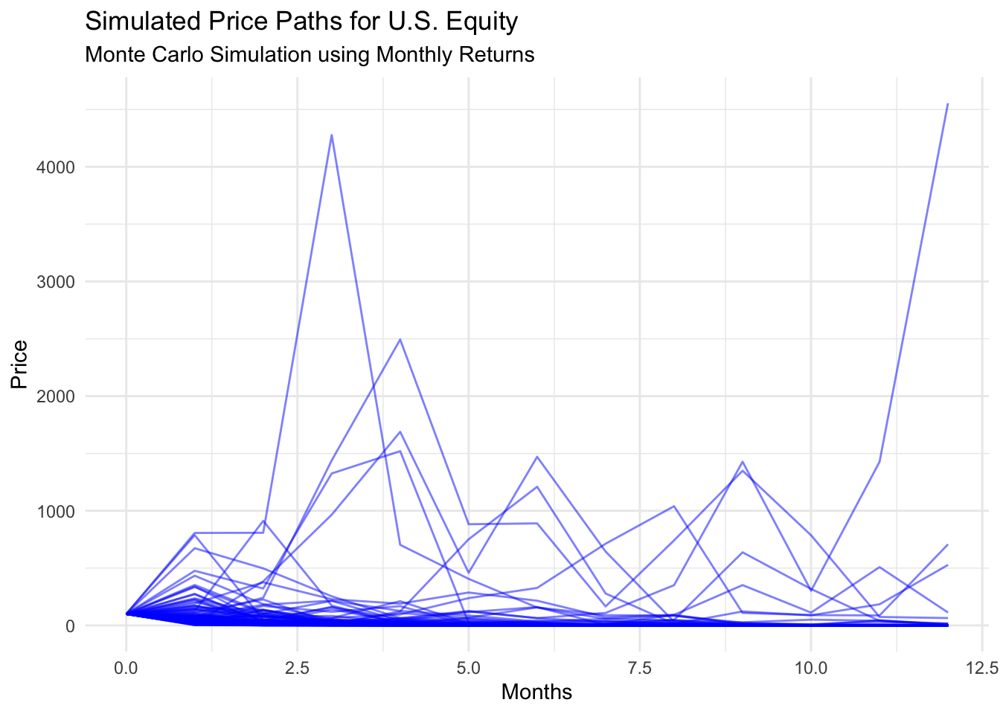
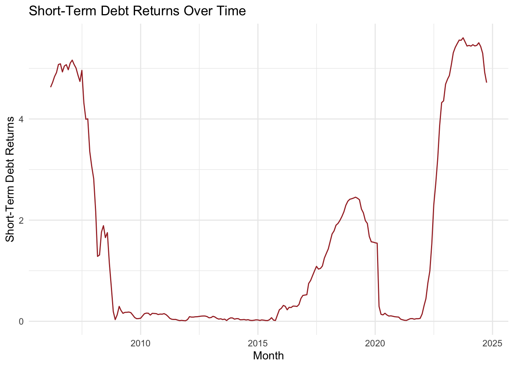

Code
library(stringr)
library(gt)
library(dplyr)
library(ggplot2)
library (tidyverse)
library(DT)
library(knitr)
library(readxl)
library(readr)
library(data.table)
library(striprtf)Welcome to Mini-Project #04! In this project, we will use R to make an important personal financial decision. New faculty hired at CUNY have 30 days to choose one of two retirement plans. This is an important and early choice that faculty must make, as it is essentially permanent and cannot be changed. Financial forecasting is quite difficult, and it is far from clear which plan is the better long-term choice. In this mini-project, we will use historical financial data and a bootstrap inference strategy to estimate the probability that one plan is better than the other.
library(httr2)
# Fetch Wage Growth data
wage_growth_response <- request("https://api.stlouisfed.org/fred/series/observations") %>%
req_url_query(series_id = "CES0500000003",
api_key = fred_key,
file_type = "json") %>%
req_perform()
# Parse the response into a data frame
wage_growth <- wage_growth_response %>%
resp_body_json() %>%
pluck("observations") %>%
map_dfr(~list(date = .x$date, value = as.numeric(.x$value)))
head(wage_growth)# A tibble: 6 × 2
date value
<chr> <dbl>
1 2006-03-01 20.0
2 2006-04-01 20.2
3 2006-05-01 20.1
4 2006-06-01 20.2
5 2006-07-01 20.3
6 2006-08-01 20.3# Fetch Inflation data
inflation_response <- request("https://api.stlouisfed.org/fred/series/observations") %>%
req_url_query(series_id = "CPIAUCSL",
api_key = fred_key,
file_type = "json") %>%
req_perform()
# Parse response
inflation <- inflation_response %>%
resp_body_json() %>%
pluck("observations") %>%
map_dfr(~list(date = .x$date, value = as.numeric(.x$value)))
head(inflation)# A tibble: 6 × 2
date value
<chr> <dbl>
1 1947-01-01 21.5
2 1947-02-01 21.6
3 1947-03-01 22
4 1947-04-01 22
5 1947-05-01 22.0
6 1947-06-01 22.1library(httr2)
library(purrr)
library(dplyr)
library(tibble)
# Define the base URL for the Alpha Vantage API
base_url <- "https://www.alphavantage.co/query"
# Set up the parameters for the API request
params <- list(
'function' = "TIME_SERIES_DAILY",
symbol = "SPY",
apikey = alpha_vantage_key,
outputsize = "compact" # Use "full" for full data history
)
# Create and perform the request using httr2
response <- request(base_url) %>%
req_url_query(!!!params) %>%
req_perform()
# Parse the response JSON content
data <- response %>% resp_body_json()
# Check if data contains expected structure
if ("Time Series (Daily)" %in% names(data)) {
time_series_data <- data$`Time Series (Daily)`
# Transform data into a data frame
spy_data <- map_dfr(names(time_series_data), function(date) {
daily_data <- time_series_data[[date]]
tibble(
date = as.Date(date),
open = as.numeric(daily_data$`1. open` %||% NA),
high = as.numeric(daily_data$`2. high` %||% NA),
low = as.numeric(daily_data$`3. low` %||% NA),
close = as.numeric(daily_data$`4. close` %||% NA),
volume = as.numeric(daily_data$`5. volume` %||% NA)
)
}) %>%
arrange(date)
# Print the first few rows of the data frame
print(head(spy_data))
} else {
message("Unexpected response structure or error: ", data$`Error Message`)
}# A tibble: 6 × 6
date open high low close volume
<date> <dbl> <dbl> <dbl> <dbl> <dbl>
1 2024-07-16 563. 565. 562. 565. 36475260
2 2024-07-17 559. 561. 557. 557. 57118956
3 2024-07-18 559. 560. 550. 553. 56270392
4 2024-07-19 552. 554. 548. 549. 65509081
5 2024-07-22 553 555. 551. 555. 43346720
6 2024-07-23 555. 557. 553. 554. 34439561library(httr2)
library(purrr)
library(dplyr)
library(tibble)
# Fetch MSCI EAFE data
eafe_response <- request("https://www.alphavantage.co/query") %>%
req_url_query(
'function' = "TIME_SERIES_DAILY",
symbol = "EFA",
outputsize = "full",
apikey = alpha_vantage_key
) %>%
req_perform()
# Parse response
parsed_content <- eafe_response %>%
resp_body_json()
# Extract Time Series (Daily) and convert to a tidy data frame
eafe <- parsed_content$`Time Series (Daily)` %>%
imap_dfr(~ tibble(
date = as.Date(.y), # Extract date from names
open = as.numeric(.x$`1. open`), # Extract and convert "1. open"
high = as.numeric(.x$`2. high`), # Extract and convert "2. high"
low = as.numeric(.x$`3. low`), # Extract and convert "3. low"
close = as.numeric(.x$`4. close`),# Extract and convert "4. close"
volume = as.numeric(.x$`5. volume`) # Extract and convert "5. volume"
))
# Arrange data by date
eafe <- eafe %>%
arrange(date)
# View the first few rows of the resulting data frame
head(eafe)# A tibble: 6 × 6
date open high low close volume
<date> <dbl> <dbl> <dbl> <dbl> <dbl>
1 2001-08-17 126 126. 125. 126. 161100
2 2001-08-20 126. 126. 126. 126. 0
3 2001-08-21 127. 128. 126. 126. 149800
4 2001-08-22 129. 129. 128. 128. 181300
5 2001-08-23 127. 127. 127. 127 143500
6 2001-08-24 128 129. 128 129. 57500library(httr2)
library(purrr)
library(dplyr)
library(lubridate)
library(tibble)
# Fetch Bond Market data
bnd_response <- request("https://www.alphavantage.co/query") %>%
req_url_query(
'function' = "TIME_SERIES_DAILY",
symbol = "BND",
outputsize = "full",
apikey = alpha_vantage_key
) %>%
req_perform()
# Parse response
bnd_data <- bnd_response %>% resp_body_json()
# Check if the response contains the 'Time Series (Daily)' key
if ("Time Series (Daily)" %in% names(bnd_data)) {
# Extract the time series data and transform it into a tibble
bnd <- bnd_data %>%
pluck("Time Series (Daily)") %>%
imap_dfr(~ tibble(
date = as.Date(.y), # Convert date string to Date object
open = as.numeric(.x$`1. open`),
high = as.numeric(.x$`2. high`),
low = as.numeric(.x$`3. low`),
close = as.numeric(.x$`4. close`),
volume = as.numeric(.x$`5. volume`)
)) %>%
arrange(date)
# Print the first few rows of the data
print(head(bnd))
} else {
# If there was an error message in the response
if ("Error Message" %in% names(bnd_data)) {
message("API Error: ", bnd_data$`Error Message`)
} else if ("Note" %in% names(bnd_data)) {
message("API Note: ", bnd_data$Note)
} else {
message("Unexpected response structure")
print(names(bnd_data))
}
}# A tibble: 6 × 6
date open high low close volume
<date> <dbl> <dbl> <dbl> <dbl> <dbl>
1 2007-04-10 75.1 75.3 75 75.2 35000
2 2007-04-11 75.2 75.3 75.0 75.0 87700
3 2007-04-12 75.1 75.1 75.0 75.0 78100
4 2007-04-13 75.0 75.1 74.8 74.9 18000
5 2007-04-16 75.0 75.0 74.9 75.0 52700
6 2007-04-17 75.2 75.2 75.1 75.2 25600# Fetch Short-Term Debt data
short_term_response <- request("https://api.stlouisfed.org/fred/series/observations") %>%
req_url_query(series_id = "DGS3MO",
api_key = fred_key,
file_type = "json") %>%
req_perform()
# Parse response
short_term <- short_term_response %>%
resp_body_json() %>%
pluck("observations") %>%
map_dfr(~list(date = .x$date, value = as.numeric(.x$value)))
head(short_term)# A tibble: 6 × 2
date value
<chr> <dbl>
1 1981-09-01 17.0
2 1981-09-02 16.6
3 1981-09-03 17.0
4 1981-09-04 16.6
5 1981-09-07 NA
6 1981-09-08 16.5library(dplyr)
library(lubridate)
# Assume `eafe`, `sp500`, `inflation`, etc., are DataFrames with a "date" column
# Helper function to downsample to monthly frequency
downsample_to_monthly <- function(df, value_col) {
# Check if the column exists
if (!(value_col %in% colnames(df))) {
stop(paste("Column", value_col, "not found in the data frame."))
}
df %>%
mutate(
date = as.Date(date), # Ensure 'date' is Date class
month = floor_date(date, "month") # Convert to monthly buckets
) %>%
group_by(month) %>%
summarize(
value = last(.data[[value_col]]), # Use last value of the month
.groups = "drop" # Ungroup after summarizing
)
}
# Apply downsampling to each series
eafe_monthly <- downsample_to_monthly(eafe, "close")
sp500_monthly <- downsample_to_monthly(spy_data, "close")
inflation_monthly <- downsample_to_monthly(inflation, "value")
# Repeat for other series as needed...
# Join all series together into one DataFrame
monte_carlo_data <- eafe_monthly %>%
full_join(sp500_monthly, by = "month", suffix = c("_eafe", "_sp500")) %>%
full_join(inflation_monthly, by = "month") %>%
rename(inflation = value)
# Inspect the combined data
head(monte_carlo_data)# A tibble: 6 × 4
month value_eafe value_sp500 inflation
<date> <dbl> <dbl> <dbl>
1 2001-08-01 125 NA 177.
2 2001-09-01 113. NA 178.
3 2001-10-01 115. NA 178.
4 2001-11-01 119. NA 178.
5 2001-12-01 119. NA 177.
6 2002-01-01 112. NA 178.# Parameters
initial_price <- tail(eafe$close, 1) # Use the last closing price as S_0
mu <- mean(diff(log(eafe$close)), na.rm = TRUE) # Drift (average log return)
sigma <- sd(diff(log(eafe$close)), na.rm = TRUE) # Volatility (std of log returns)
n_steps <- 252 # Simulate for 1 year (252 trading days)
n_simulations <- 100 # Number of simulation paths
time_horizon <- 1 # Time horizon in years
# Simulate price paths
set.seed(123) # For reproducibility
dt <- time_horizon / n_steps
price_paths <- matrix(NA, nrow = n_steps + 1, ncol = n_simulations)
# Initialize the first row with the initial price
price_paths[1, ] <- initial_price
# Generate paths
for (i in 2:(n_steps + 1)) {
z <- rnorm(n_simulations) # Random shocks
price_paths[i, ] <- price_paths[i - 1, ] * exp((mu - 0.5 * sigma^2) * dt + sigma * sqrt(dt) * z)
}
# Convert to a tidy data frame for visualization
price_paths_df <- as.data.frame(price_paths) %>%
mutate(day = 0:n_steps) %>%
pivot_longer(-day, names_to = "simulation", values_to = "price")
# Plot simulated price paths
ggplot(price_paths_df, aes(x = day, y = price, group = simulation)) +
geom_line(alpha = 0.5) +
labs(
title = "Simulated Price Paths",
x = "Days",
y = "Price"
) +
theme_minimal()# Parameters for S&P 500 (replace `spy` with your actual data)
initial_price <- tail(spy_data$close, 1) # Use the last closing price as S_0
mu <- mean(diff(log(spy_data$close)), na.rm = TRUE) # Drift (average log return)
sigma <- sd(diff(log(spy_data$close)), na.rm = TRUE) # Volatility (std of log returns)
n_steps <- 252 # Simulate for 1 year (252 trading days)
n_simulations <- 100 # Number of simulation paths
time_horizon <- 1 # Time horizon in years
# Simulate price paths
set.seed(123) # For reproducibility
dt <- time_horizon / n_steps
price_paths <- matrix(NA, nrow = n_steps + 1, ncol = n_simulations)
# Initialize the first row with the initial price
price_paths[1, ] <- initial_price
# Generate paths
for (i in 2:(n_steps + 1)) {
z <- rnorm(n_simulations) # Random shocks
price_paths[i, ] <- price_paths[i - 1, ] * exp((mu - 0.5 * sigma^2) * dt + sigma * sqrt(dt) * z)
}
# Convert to a tidy data frame for visualization
price_paths_df <- as.data.frame(price_paths) %>%
mutate(day = 0:n_steps) %>%
pivot_longer(-day, names_to = "simulation", values_to = "price")
# Plot simulated price paths
ggplot(price_paths_df, aes(x = day, y = price, group = simulation)) +
geom_line(alpha = 0.5, color = "blue") +
labs(
title = "Simulated Price Paths for S&P 500",
subtitle = "Monte Carlo Simulation",
x = "Days",
y = "Price"
) +
theme_minimal()# Load necessary libraries
library(dplyr)
library(lubridate)
library(ggplot2)
library(tidyr)
# Ensure all the datasets (wage_growth, inflation, spy_data, eafe, bnd_data, short_term) are loaded as per your provided code
# 1. Convert 'date' columns to Date type and create a 'month' column
wage_growth <- wage_growth %>%
mutate(date = as.Date(date)) %>%
mutate(month = floor_date(date, "month"))
inflation <- inflation %>%
mutate(date = as.Date(date)) %>%
mutate(month = floor_date(date, "month"))
spy_data <- spy_data %>%
mutate(date = as.Date(date)) %>%
mutate(month = floor_date(date, "month"))
eafe <- eafe %>%
mutate(date = as.Date(date)) %>%
mutate(month = floor_date(date, "month"))
short_term <- short_term %>%
mutate(date = as.Date(date)) %>%
mutate(month = floor_date(date, "month"))
# 2. Calculate monthly averages for each dataset
wage_growth_monthly_avg <- wage_growth %>%
group_by(month) %>%
summarise(wage_growth = mean(value, na.rm = TRUE))
inflation_monthly_avg <- inflation %>%
group_by(month) %>%
summarise(inflation = mean(value, na.rm = TRUE))
spy_monthly_avg <- spy_data %>%
group_by(month) %>%
summarise(spy_returns = mean(close, na.rm = TRUE))
eafe_monthly_avg <- eafe %>%
group_by(month) %>%
summarise(eafe_returns = mean(close, na.rm = TRUE))
short_term_monthly_avg <- short_term %>%
group_by(month) %>%
summarise(short_term_returns = mean(value, na.rm = TRUE))
# 3. Combine all datasets into one dataframe
combined_data <- wage_growth_monthly_avg %>%
left_join(inflation_monthly_avg, by = "month") %>%
left_join(spy_monthly_avg, by = "month") %>%
left_join(eafe_monthly_avg, by = "month") %>%
left_join(short_term_monthly_avg, by = "month")
# 4. Calculate the correlation matrix among all the factors
cor_matrix <- combined_data %>%
select(wage_growth, inflation, spy_returns, eafe_returns, short_term_returns) %>%
cor(use = "complete.obs")
# Print the correlation matrix
print(cor_matrix) wage_growth inflation spy_returns eafe_returns
wage_growth 1.0000000 0.9950650 0.8838632 0.7440481
inflation 0.9950650 1.0000000 0.9240022 0.7372772
spy_returns 0.8838632 0.9240022 1.0000000 0.7322950
eafe_returns 0.7440481 0.7372772 0.7322950 1.0000000
short_term_returns -0.9742404 -0.9809282 -0.9387579 -0.8503890
short_term_returns
wage_growth -0.9742404
inflation -0.9809282
spy_returns -0.9387579
eafe_returns -0.8503890
short_term_returns 1.0000000# 5. Calculate the long-run averages (monthly average values for each series)
long_run_averages <- combined_data %>%
summarise(
wage_growth_avg = mean(wage_growth, na.rm = TRUE),
inflation_avg = mean(inflation, na.rm = TRUE),
spy_returns_avg = mean(spy_returns, na.rm = TRUE),
eafe_returns_avg = mean(eafe_returns, na.rm = TRUE),
short_term_returns_avg = mean(short_term_returns, na.rm = TRUE)
)
# Print the long-run averages table
print(long_run_averages)# A tibble: 1 × 5
wage_growth_avg inflation_avg spy_returns_avg eafe_returns_avg
<dbl> <dbl> <dbl> <dbl>
1 26.0 245. 559. 64.3
# ℹ 1 more variable: short_term_returns_avg <dbl># 6. Calculate the variance for each series (measuring variability)
variance_table <- combined_data %>%
summarise(
wage_growth_variance = var(wage_growth, na.rm = TRUE),
inflation_variance = var(inflation, na.rm = TRUE),
spy_returns_variance = var(spy_returns, na.rm = TRUE),
eafe_returns_variance = var(eafe_returns, na.rm = TRUE),
short_term_returns_variance = var(short_term_returns, na.rm = TRUE)
)
# Print the variance table
print(variance_table)# A tibble: 1 × 5
wage_growth_variance inflation_variance spy_returns_variance
<dbl> <dbl> <dbl>
1 17.6 928. 196.
# ℹ 2 more variables: eafe_returns_variance <dbl>,
# short_term_returns_variance <dbl>

# Assuming 'wage_growth', 'inflation', and 'spy_data' (equity market returns) are loaded
# Step 1: Set Starting Salary and Employee Contributions
starting_salary <- 50000 # Example starting salary
years_of_service <- nrow(wage_growth) # Number of years the employee works
salary <- numeric(years_of_service)
salary[1] <- starting_salary
# Simulate salary growth over the career using wage growth data
for (i in 2:years_of_service) {
salary[i] <- salary[i-1] * (1 + wage_growth$value[i-1] / 100)
}
# Step 2: Calculate TRS Contribution and Benefit
# TRS Contributions (fixed percentages for salary brackets)
trs_contribution_rate <- ifelse(salary[1] <= 45000, 0.03,
ifelse(salary[1] <= 55000, 0.035,
ifelse(salary[1] <= 75000, 0.045,
ifelse(salary[1] <= 100000, 0.0575, 0.06))))
# Final Salary for TRS calculation
final_salary_trs <- salary[years_of_service] # Final salary at retirement
# TRS Benefit calculation (Final Average Salary)
fas <- mean(salary[(years_of_service-2):years_of_service]) # Average of last 3 years
years_served <- years_of_service
# TRS retirement benefit based on years served
if (years_served <= 20) {
trs_benefit <- 0.0167 * fas * years_served
} else if (years_served == 20) {
trs_benefit <- 0.0175 * fas * years_served
} else {
trs_benefit <- (0.35 + 0.02 * years_served) * fas
}
# Inflation adjustment for TRS (using CPI)
inflation_rate <- inflation$value[years_of_service] # Inflation from historical data
inflation_adjustment <- min(max(inflation_rate * 0.5, 0.01), 0.03) # Between 1% and 3%
trs_benefit <- trs_benefit * (1 + inflation_adjustment)
# Step 3: Calculate ORP Contributions and Benefit (Based on Investment Returns and Contributions)
orp_employee_contrib_rate <- ifelse(salary[1] <= 45000, 0.03,
ifelse(salary[1] <= 55000, 0.035,
ifelse(salary[1] <= 75000, 0.045,
ifelse(salary[1] <= 100000, 0.0575, 0.06))))
orp_employer_contrib_rate <- ifelse(years_of_service <= 7, 0.08, 0.10) # Employer contribution rate
investment_return_rate <- 0.06 # Average return rate for ORP
orp_balance <- 0 # Start with 0 balance
# ORP Balance calculation using asset allocation for each age group
for (i in 1:years_of_service) {
annual_contrib <- salary[i] * (orp_employee_contrib_rate + orp_employer_contrib_rate)
orp_balance <- orp_balance * (1 + investment_return_rate) + annual_contrib
}
# Step 4: Compare TRS and ORP at the First Month of Retirement
# TRS Benefit at retirement (monthly)
first_month_trs_benefit <- trs_benefit / 12 # Monthly benefit for TRS
# ORP Balance at retirement (monthly equivalent)
first_month_orp_balance <- orp_balance / 12 # Monthly withdrawal from ORP balance
# Print Results
cat("TRS Monthly Benefit for the First Month of Retirement:", first_month_trs_benefit, "\n")TRS Monthly Benefit for the First Month of Retirement: 3.412677e+26 ORP Monthly Benefit for the First Month of Retirement: 5.672613e+25 #Long-Term Average Analysis
# Assuming 'wage_growth', 'inflation', and 'spy_data' (equity market returns) are loaded
# Step 1: Set Starting Salary and Employee Contributions
starting_salary <- 50000 # Example starting salary
years_of_service <- nrow(wage_growth) # Number of years the employee works
salary <- numeric(years_of_service)
salary[1] <- starting_salary
# Simulate salary growth over the career using wage growth data
for (i in 2:years_of_service) {
salary[i] <- salary[i-1] * (1 + wage_growth$value[i-1] / 100)
}
# Step 2: Calculate TRS Contribution and Benefit
# TRS Contributions (fixed percentages for salary brackets)
trs_contribution_rate <- ifelse(salary[1] <= 45000, 0.03,
ifelse(salary[1] <= 55000, 0.035,
ifelse(salary[1] <= 75000, 0.045,
ifelse(salary[1] <= 100000, 0.0575, 0.06))))
# Final Salary for TRS calculation
final_salary_trs <- salary[years_of_service] # Final salary at retirement
# TRS Benefit calculation (Final Average Salary)
fas <- mean(salary[(years_of_service-2):years_of_service]) # Average of last 3 years
years_served <- years_of_service
# TRS retirement benefit based on years served
if (years_served <= 20) {
trs_benefit <- 0.0167 * fas * years_served
} else if (years_served == 20) {
trs_benefit <- 0.0175 * fas * years_served
} else {
trs_benefit <- (0.35 + 0.02 * years_served) * fas
}
# Inflation adjustment for TRS (using CPI)
inflation_rate <- inflation$value[years_of_service] # Inflation from historical data
inflation_adjustment <- min(max(inflation_rate * 0.5, 0.01), 0.03) # Between 1% and 3%
trs_benefit <- trs_benefit * (1 + inflation_adjustment)
# Step 3: Calculate ORP Contributions and Benefit (Based on Investment Returns and Contributions)
orp_employee_contrib_rate <- ifelse(salary[1] <= 45000, 0.03,
ifelse(salary[1] <= 55000, 0.035,
ifelse(salary[1] <= 75000, 0.045,
ifelse(salary[1] <= 100000, 0.0575, 0.06))))
orp_employer_contrib_rate <- ifelse(years_of_service <= 7, 0.08, 0.10) # Employer contribution rate
investment_return_rate <- 0.06 # Average return rate for ORP
orp_balance <- 0 # Start with 0 balance
# ORP Balance calculation using asset allocation for each age group
for (i in 1:years_of_service) {
annual_contrib <- salary[i] * (orp_employee_contrib_rate + orp_employer_contrib_rate)
orp_balance <- orp_balance * (1 + investment_return_rate) + annual_contrib
}
# Step 4: Fixed-Rate Analysis - Project Retirement Benefits Until Death (Assumed Death Age: 85)
death_age <- 85 # Estimated age at death
retirement_age <- 65 # Fixed retirement age (adjust this as needed)
# Ensure death age is greater than retirement age
if (death_age <= retirement_age) {
stop("Death age must be greater than retirement age.")
}
# Number of years in retirement
years_in_retirement <- death_age - retirement_age + 1
# Initialize arrays to track monthly benefits over time
trs_monthly_benefit <- numeric(years_in_retirement)
orp_monthly_withdrawal <- numeric(years_in_retirement)
orp_remaining_balance <- orp_balance # Start with final ORP balance
# TRS Projection with Inflation (Cost-of-Living Adjustments)
for (i in 1:years_in_retirement) {
trs_monthly_benefit[i] <- trs_benefit / 12 # Monthly benefit (fixed)
trs_benefit <- trs_benefit * (1 + inflation_adjustment) # Apply COLA
}
# ORP Projection with Annual Returns and Withdrawals
for (i in 1:years_in_retirement) {
orp_monthly_withdrawal[i] <- orp_remaining_balance * 0.04 / 12 # Withdraw 4% annually
orp_remaining_balance <- orp_remaining_balance * (1 + investment_return_rate) - orp_monthly_withdrawal[i] * 12
if (orp_remaining_balance < 0) {
orp_monthly_withdrawal[i] <- orp_monthly_withdrawal[i] + orp_remaining_balance / 12 # Adjust final withdrawal
break
}
}
# Calculate the average monthly income for TRS and ORP
avg_trs_income <- mean(trs_monthly_benefit)
avg_orp_income <- mean(orp_monthly_withdrawal)
# Calculate the maximum and minimum gap in monthly income between TRS and ORP
max_gap <- max(trs_monthly_benefit - orp_monthly_withdrawal)
min_gap <- min(trs_monthly_benefit - orp_monthly_withdrawal)
# Print Results
cat("TRS Average Monthly Income:", avg_trs_income, "\n")TRS Average Monthly Income: 4.660171e+26 ORP Average Monthly Income: 2.785881e+24 Maximum Monthly Income Gap (TRS - ORP): 6.129958e+26 Minimum Monthly Income Gap (TRS - ORP): 3.389987e+26